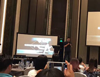

苹果肌又称“笑肌”苹果肌的存在会使面部轮廓更有立体感，显得年轻有活力，当苹果肌的位置出现软组织萎缩凹陷甚至下垂时，泪沟法令纹会加重，用脂肪肌内精雕术丰苹果肌，可以改善扁平的面部曲线，打造立体、青春、甜美、自然的脸庞。
- 颧骨更宽、更平
- 泪沟更明显
- 凸嘴更明显
自信的人都觉得自己很美
但是我们每个人都不是完美的，在美的基础上善于发现自己的不足之处
进行微调不仅会让你自己都觉得很美
在别人的眼中你也是人群中最美的一个
苹果肌不饱满，立即咨询解决方案 GO>>让你拥有和他们一样丰盈饱满的苹果肌
苹果肌是面部最生动立体的部位，
经常处在动与静的交替状态，因此，
丰苹果肌手术成功的关键因素在于微微一笑的自然甜美隆起状。
王东院长攻克脂肪移植技术难关，将脂肪移植层次做技术延伸，加入肌肉间隙层，根据苹果肌面部生动立体的部位均匀的注入下垂或者消失的苹果肌，让苹果肌在动与静的状态下形态自然立体、饱满甜美，不会特别凸出，一次就能达到满意效果。
-
只需填充一次
就可持久保持
需要多次填充
且效果不佳
-
恢复时间短
脂肪的成活量大
恢复时间长，脂肪
成活率低需多次填充
-
有，持久保留
堪比假体效果
保留时间短
易吸收
-
针眼选择在发际线内
恢复后无痕
痕迹明显
需采用激光去除
-
采用负压式神经
主干麻醉，无痛感
传统麻醉注射
痛感明显
-
无损脂肪提取
可进行活性脂肪循环
安全措施不到位
易感染，脂肪易液化
-
从局部到整体，过渡到从整体到局部的美学设计，对脸部的黄金黄金分割进行了多维设计，打造微笑的灵动甜美感。
-
王东遵循东方女性面部神韵状态将苹果肌从五个微面，每个微面遵循脂肪加减法则，加到丰盈饱满，减到柔和自然、甜美可爱，精致呈现“中而新”的经典艺术美。
王东----国内脂肪移植权威学术带头人，专注自体脂肪细胞科研及临床工作十余年，吸脂技术发展至今的顶峰就是由北京艺美王东院长首创的形体雕塑技术理念。在10余年的临床工作中，王东院长先后开展了多场脂肪移植研修教学课，为中国上千名整形医生进行手术演示教学。
 高峰论坛学术演讲
高峰论坛学术演讲- 王东院长做《形体雕塑》演讲
 王东院长做手术演示教学
王东院长做手术演示教学- 王东院长做面部解剖教学
- 为1000余名手术医生做手术教学演示
- 为整形医生做面部结构教学
 脂肪高峰论坛面部设计教学
脂肪高峰论坛面部设计教学- 脂肪学术演讲
-
- ・ 丰苹果肌有副作用？
- ・ 丰苹果肌哪种方法好？
- ・ 可以恢复肌肤活力？
-
- ・ 丰苹果肌可以维持多久？
- ・ 丰苹果肌贵吗？
- ・ 丰苹果肌会不会反弹？